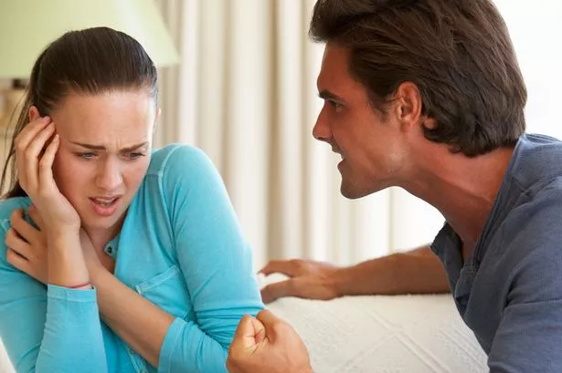

ABUSE: WHO ATTRACTS AN ABUSER ?
Who attracts an abuser?
I have heard severally that not everyone can get into abusive relationships. While I know this to be true, I acknowledge that people who get into abusive relationships carry certain traits developed in their early childhood.
Robin Norwood explains this concept further that people tend to marry those who enact the same environment they are familiar with – the environment that they learnt as children. To simplify this even further, people tend to marry people who take them through the same emotions they went through as children.
This means that the person one attracts has everything to do with the background where the person was formed – the family of origin. So what are some of these traits that attract potential abusers?
- A person who believes that if they love someone else in an exceptional way, that person will change and becomes better. The common thing that abusive people do is to convince the person they intend to win over that the people they dated/married previously did not love them and that is why they feel and behave the way they do. The impression given is that they will change if the new person is different.
- A person who believes that the other can be productive, successful and wealthy if they had someone to boost them, give them resources, get a job for them or finance their venture is setting themselves up for abuse.
- A person who believes the other is a victim of circumstance. I am in this situation because I am an orphan, because my parents did not educate me, because I was treated as a black sheep at home… Every single person has had challenges, some bigger than others. The question is, what makes particular people get stuck in their challenges while others get enriched by the lessons?
- A person who believes that marriage/settling down will provide escape from poverty, “single person” labels, from a violent family, from lack of love, etc., is likely to attract an abuser. This is because they live in fantasy of getting their needs met that they do not watch out for the “red flags”.
- A person who engages passionately only when together or during sex but gets cold when away is a potential abuser. They either lack capacity to emotionally connect or they have no intention pursuing it.
- A person who believes they will heal a wounded person through their love and patience. Healing takes more than love and patience, it takes deliberate effort, it takes work. Since it is true that hurt people hurt others, instead of reciprocating your love, they are likely to continue to cause pain because they see life through the eyes of their pain. Continuous pain is abuse.
- A person who was emotionally abandoned by parents and has not healed is likely to seek after a person who will complete the love they missed which plays out in patterns of clinginess or emotional detachment. (parents may be physically present but emotionally absent to a child)
- A person who believes that by avoiding conflicts they will have a peaceful relationship.
- A person who gets involved with a partner who has addiction issues or, has manifested some form of risky sexual behavior. This person may blame it on loneliness so that the person they are dating believes that, by accepting to cure their loneliness, they will become responsible and stop their addictions. Love does not cure any addiction because addiction is a disease.
- A person who meets another and feels the need to upgrade their lives so that they can own a better car, have better wardrobe, live in better neighborhood or eat in better restaurants. If you do not feel comfortable with a person as they are, its only better to move and find one that fits what you want.
Potential abusers will show you how it is just you that truly loves them among all the others that they ever loved. Love, acceptance and making every possible effort does not change an abuser. The person needs not only to heal and love themselves well enough to teach others how to love them, but also accept that no one can love anyone more than they love themselves.
Any adult who needs to be rescued from their own helplessness learns to depend on the purported saviour. If they are not able to use their God given resources to get themselves out of their position, send them to a therapist or any other professional who can equip them with the required skills.
This victim mentality may continue even in relationship and it may end up as a “state of being”. This means that the other partner will feel abused as they carry most of the burdens in this relationship to keep the victim from feeling further victimized.
This person forms an image of what they want in the long run and continues to pursue their mental ideal in the person they are dating. They only see the strengths, overlooking the weaknesses. The healthy way is to acknowledge, heal and grow so that the decision is not influenced by one’s unmet needs but by facts.
Clingy individuals attract those people who easily offer superficial love and that is the fantasy they dream of. These people cling onto their imagination of the love they share that when abuse happens, they begin to believe they are at fault because the other person is so perfect. They continue to fill their void of love by not letting go.
In the setups where a person internalized the detachment style they learnt as children, they may live with the constant feeling that their partners will walk out on them. This makes them insecure, picking signals of being abandoned even where they do not exist.
Conflicts are good for the growth of any relationship, they are evidence that two different people are free to express their different opinions. Some feel that it is entirely their fault that that conflicts in a relationship are happening and if they do more, conflicts will end.
Others believe that for their partners to behave in any unpleasant way including being aggressive, it is their fault. When we take responsibility for other people, we entertain abusers who will blame the victim of abuse for their behavior.
Insistence on upgrading another is a form of control and the controlling person is likely to become the perpetrator of abuse. The perpetrator is likely to dictate how life needs to be while the victim continues to follow even when its unpleasant for them.
By Joan Kirera - Psychologist/ Marriage and Family Therapist.